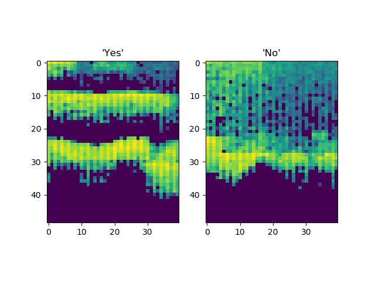
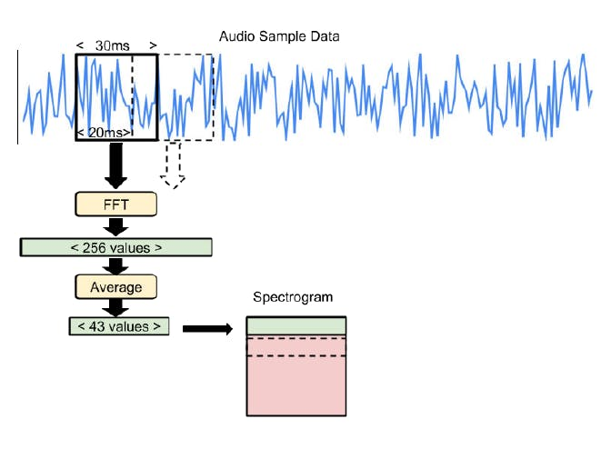
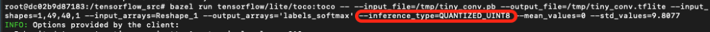
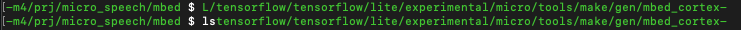

Machine learning with TensorFlow and Mbed OS
As an IoT developer, you might think of machine learning as a server-side technology: sensors on your device capture data and send it to the cloud, where Machine Learning (ML) models on hefty machines make sense of it. A network connection is obligatory, and you are going to expect some latency, not to mention hosting costs.
But with the launch of TensorFlow Lite for Microcontrollers, you can run machine learning inference on extremely low-power devices, like Arm Cortex-M series-based microcontrollers. You can deploy your ML models to the IoT devices themselves, bringing ML closer to your sensors, remove your reliance on a network connection, and skip the round trip to the server for lower latency whilst having the benefit of reducing your power consumption compared to transferring data over a wireless connection.
This is especially exciting for IoT, because lower network use means lower power consumption. You can also better guarantee the security and privacy of your users, since you do not need to send data back to the cloud unless you know for sure that it is relevant.
In this guide, you will learn how to perform machine learning inference on an Arm Cortex-M microcontroller with TensorFlow Lite for Microcontrollers. You will deploy a sample application we wrote that uses the microphone on the K66F and a TensorFlow machine learning model to detect the words “yes” and “no”.
The guide has step by step instructions for installing and running the application, followed by information about how TensorFlow and the application work. Finally, it shows you how to retrain the ML model with new words.
Using the example application
Important: We recommend running the following commands from inside the Mbed CLI terminal that gets launched with the Mbed CLI Application. This is because it will be much quicker to set up, because it resolves all your environment dependencies automatically.
Prerequisites
Here is what you will need to complete the guide:
-
The GNU Arm Embedded toolchain that Mbed CLI supports.
Configure Mbed CLI to find your GNU installation:
mbed config -G GCC_ARM_PATH <path_to_your_arm_toolchain>/bin -
Make 3.82 or newer (if you are using an older version, see the troubleshooting section for instructions).
Note: On a Mac, you might have to use gmake instead of make.
-
Python 3.7.
-
xxd which is a command-line utility that creates a hex dump of a given file or standard input. It can also convert a hex dump back to its original binary form.
-
A development board that can run TensorFlow Lite for Microcontrollers. We tested on the NXP FRDM-K66F development board.
-
A mini-USB cable.
Note: This tutorial has been tested on Ubuntu 20.04 LTS. If you are using a Windows machine, we recommend using virtualization software to create a virtual Linux machine to run this tutorial.
Download, build and install the application
-
Navigate to the directory where you keep code projects.
-
Download the TensorFlow Lite source code:
git clone https://github.com/tensorflow/tensorflow.git -
Navigate into the project directory:
cd tensorflow/tensorflow/lite/micro/mbed/ -
Change the DebugLog function to use UnbufferedSerial instead since the Serial API was deprecated in Mbed OS 6:
nano debug_log.cc extern "C" void DebugLog(const char* s) { printf("%s", s); } -
Build the project
cd ../../../../ make -f tensorflow/lite/micro/tools/make/Makefile TARGET=mbed TAGS="nxp_k66f" generate_micro_speech_mbed_projectThis creates a folder in
tensorflow/lite/micro/tools/make/gen/mbed_cortex-m4/prj/micro_speech/mbedthat contains the source and header files for the example application, Mbed OS driver files, and a README. -
Navigate into the
mbedfolder:cd tensorflow/lite/micro/tools/make/gen/mbed_cortex-m4/prj/micro_speech/mbed -
Connect your board to your computer over USB. On your board, when the Ethernet port is facing you, the micro USB port is to its left. Your board appears as storage on your computer. If your system does not recognize the board with the
mbed detectcommand, follow the instructions for setting up DAPLink. -
Execute the following to flash the application onto the board:
mbed config root . mbed deploy mbed update mbed-os-6.4.0 mbed compile -m K66F -t GCC_ARM --flash --stermNote: The
mbed config root .command is a non-standard method used by TensorFlow to initialize the project in the current directoy. The typical way for mbed projects to do this is with the use ofmbed init. -
Speak into the board's microphone: Saying "Yes" will print "Yes" and "No" will print "No" on the serial port:
Heard yes (208) @116448ms Heard unknown (241) @117984ms Heard no (201) @124992ms
the output shows found_command, score and current_time as described in the command_responder.cc file. Congratulations! You are now running a machine learning model that can recognise keywords on an Arm Cortex-M4 microcontroller, directly on your K66F.
It is easy to change the behavior of our program, but is it difficult to modify the machine learning model itself? The answer is no, and the section Retrain the machine learning model will show you how. First, let's review what the application is doing - and how.
How TensorFlow and the application work
Let’s explore the project files on for the speech example and learn how this TensorFlow Lite for Microcontrollers example works.
The application samples audio from the microphone on the K66F. The audio is run through a Fast Fourier transform to create a spectrogram. The spectrogram is then fed into a pre-trained machine learning model. The model uses a convolutional neural network to identify whether the sample represents “yes”, “no”, an unknown input or silence. We will explore how this works in more detail later in the guide.
Here are descriptions of some interesting source files:
-
nxp_k66f/audio_provider.cc: Captures audio from the microphone on the board.
-
micro_features/micro_features_generator.cc: Uses a Fast Fourier transform to create a spectrogram from audio.
-
micro_features/model.cc: This file is the machine learning model itself, represented by a large array of unsigned char values.
-
command_responder.cc: Called every time a potential command has been identified.
-
main.cc: The entry point for the Mbed OS program, which runs the machine learning model using TensorFlow Lite for Microcontrollers.
Convolutional neural networks
Convolutional networks are a type of deep neural network. These networks are designed to identify features in multidimensional vectors. The information in these vectors is contained in the relationships between groups of adjacent values.
These networks are usually used to analyse images. An image is a good example of the multidimensional vectors described above, in which a group of adjacent pixels might represent a shape, a pattern, or a texture. During training, a convolutional network can identify these features and learn what they represent. The network can learn how simple image features, like lines or edges, fit together into more complex features, like an eye or an ear. The network can also learn how those features are combined to form an input image, like a photo of a human face. This means that a convolutional network can learn to distinguish between different classes of input image, for example a photo of a person and a photo of a dog.
While they are often applied to images, which are 2D grids of pixels, a convolutional network can be used with any multidimensional vector input. In the example in this guide, a convolutional network has been trained on a spectrogram that represents 1 second of audio bucketed into multiple frequencies.
The following image is a visual representation of the audio. The network in our sample has learned which features in this image come together to represent a "yes", and which come together to represent a "no".

To generate this spectrogram, we use an interesting technique that is described in the next section.
Feature generation with Fast Fourier transform
In our code, each spectrogram is represented as a 2D array, with 43 columns and 49 rows. Each row represents a 30ms sample of audio that is split into 43 frequency buckets.
To create each row, we run a 30ms slice of audio input through a Fast Fourier transform. Fast Fourier transform analyses the frequency distribution of audio in the sample and creates an array of 256 frequency buckets, each with a value from 0 to 255. These buckets are averaged together into groups of 6, leaving us with 43 buckets. The code in the file micro_features/micro_features_generator.cc performs this action.
To build the entire 2D array, we combine the results of running the Fast Fourier transform on 49 consecutive 30ms slices of audio, with each slice overlapping the last by 10ms, as illustrated below:

You can see how the 30ms sample window is moved forward by 20ms each time until it has covered the full one-second sample. The resulting spectrogram is passed into the convolutional model.
Recognition and windowing
The process of capturing one second of audio and converting it into a spectrogram leaves us with something that our ML model can interpret. The model outputs a probability score for each category it understands (yes, no, unknown, and silence). The probability score indicates whether the audio is likely to belong to that category.
The model was trained on the one-second samples of audio we saw above. In the training data, the word “yes” or “no” is spoken at the start of the sample, and the entire word is contained within that one-second. However, when the application is running, there is no guarantee that a user will begin speaking at the very beginning of our one-second sample. If the user starts saying “yes” at the end of the sample instead of the beginning, the model might not be able to understand the word. This is because the model uses the position of the features within the sample to help predict which word was spoken.
To solve this problem, our code runs inference as often as it can, depending on the speed of the device, and averages all of the results within a rolling 1000ms window. The code in the file recognize_commands.cc performs this action. When the average for a given category in a set of predictions goes above the threshold, as defined in recognize_commands.h, we can assume a valid result.
Interpreting the results
The RespondToCommand method in command_responder.cc is called when a command has been recognized. This results in a line being printed to the serial port.
Retrain the machine learning model
The model that we are using for speech recognition was trained on a dataset of one-second spoken commands called the Speech Commands Dataset. The dataset contains examples of ten words: yes, no, up, down, left, right, on, off, stop, go.
While the model in this sample was originally trained to recognise “yes” and “no”, the TensorFlow Lite for Microcontrollers source contains scripts that make it easy to retrain the model to classify any other combination of these words.
We are going to use another pre-trained model to recognise “up” and “down”:
- Look at how the TensorFlow model gets converted to the TensorFlow Lite format.
- Download a model that has been trained and frozen using TensorFlow.
- Convert the TensorFlow Lite model into a C source file.
- Modify the code and deploy to the board.
Tip: Building TensorFlow and training the model will each take a couple of hours on an average computer. We will not perform this at this stage. If you are interested in the full flow, including the training of the model, refer to the Supplementary information: model training guide.
Background: Converting the trained model
To get a converted model that can run on the controller itself from the trained model, we need to run a conversion script: the TensorFlow Lite converter. This tool makes our model as small and efficient as possible, and converts it to a TensorFlow Lite FlatBuffer. To reduce the size of the model, we used a technique called quantization. All weights and activations in the model get converted from 32-bit floating point format to an 8-bit and fixed-point format, as you can see in the following command:

This conversion will not only reduce the size of the network traffic, but will also avoid the more computationally expensive floating points.
To save time, in this guide we skip the conversion step and instead download a converted model.
Downloading the model and creating a C file
-
Download the tiny_conv.tflite file.
-
Convert this model into a C file that works with Mbed OS projects.
Use a tool called xxd to generate a file called
model.cc:xxd -i tiny_conv.tflite > ../micro_features/model.cc -
Update
model.ccso that it is compatible with our code:-
Open the file. The top two lines should look similar to the following code, although the exact variable name and hex values may be different:
const unsigned char g_model[] DATA_ALIGN_ATTRIBUTE = { 0x18, 0x00, 0x00, 0x00, 0x54, 0x46, 0x4c, 0x33, 0x00, 0x00, 0x0e, 0x00, -
Add the
includefrom the following snippet and change the variable declaration without changing the hex values:#include "tensorflow/lite/micro/examples/micro_speech/micro_features/model.h" const unsigned char g_tiny_conv_micro_features_model_data[] = { 0x18, 0x00, 0x00, 0x00, 0x54, 0x46, 0x4c, 0x33, 0x00, 0x00, 0x0e, 0x00, -
Go to the bottom of the file and find the unsigned int variable:
unsigned int tiny_conv_tflite_len = 18216; -
Change the declaration to the following code, but do not change the value assigned to it, as it is automatically generated to indicate the size of the model. Even if your number is different from the one in this guide:"
const int g_tiny_conv_micro_features_model_data_len = 18216; -
Save the file.
-
-
Copy the
model.ccfile into thetensorflow/tensorflow/lite/micro/tools/make/gen/mbed_cortex-m4/prj/micro_speech/mbed/tensorflow/lite/micro/examples/micro_speech/micro_featuresdirectory.
Modify the application code
If you build and run your code now, your ML model knows the words “up” and “down”, but your application assumes that the words are “yes” and “no”. Let’s update the references and the user interface so that the appropriate words are printed.
-
Navigate to the
tensorflow/lite/micro/examples/micro_speech/directory and open the filemicro_features/micro_model_settings.cc.You see the following category labels:
const char* kCategoryLabels[kCategoryCount] = { "silence", "unknown", "yes", "no", };The code uses this array to map the output of the model to the correct value. Because we specified our
WANTED_WORDSas “up, down” in the training script, we should update this array to reflect these words in the same order. -
Edit the code so that "up" replaces "yes" and "down" replaces "no":
const char* kCategoryLabels[kCategoryCount] = { "silence", "unknown", "up", "down", }; -
Navigate back to the mbed directory:
cd <path_to_tensorflow>/tensorflow/lite/micro/tools/make/gen/mbed_cortex-m4/prj/micro_speech/mbed -
Rebuild the project:
mbed compile -m K66F -t GCC_ARM --flash --sterm
You can now say “up” and “down” to update the display.
Troubleshooting
We have found some common errors that users face and have listed them here to help you get started with your application as quickly as possible.
-
If you encounter:
Mbed CLI issues or Error: collect2: error: ld returned 1 exit statusPurge the cache with the following command:
mbed cache purgeYou probably also have a stale BUILD folder. Clean up your directory and try again:
rm -rf BUILD -
If your terminal is wrapping your text as show here:

In your terminal, type:
export PS1='\u@\h: 'For a more minimalist type:
export PS1='> ' -
Error:
-bash: mbed: command not foundYour Mbed CLI installation isn't working properly. We recommend using the installers.
If you installed manually, make sure to follow the instructions for configuring the compiler location.